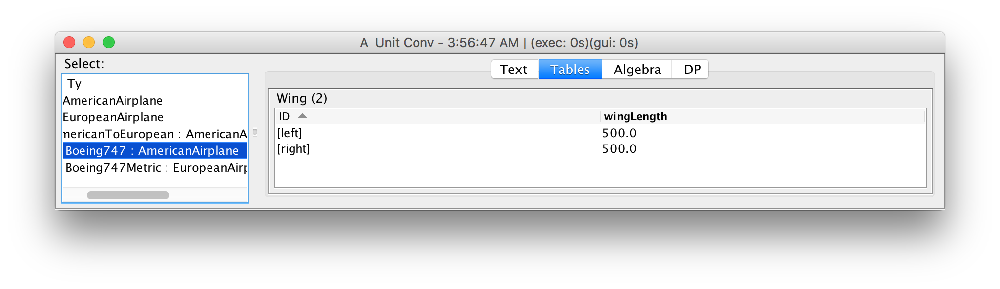
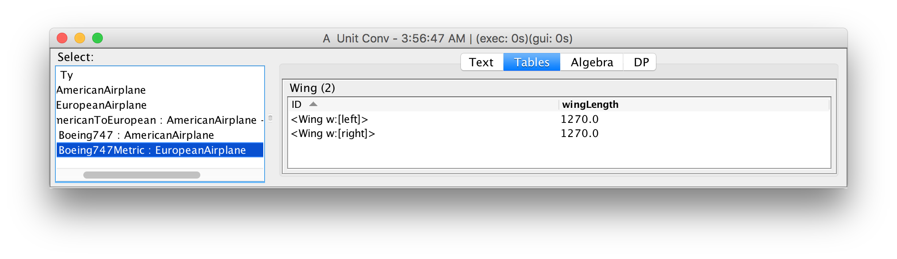
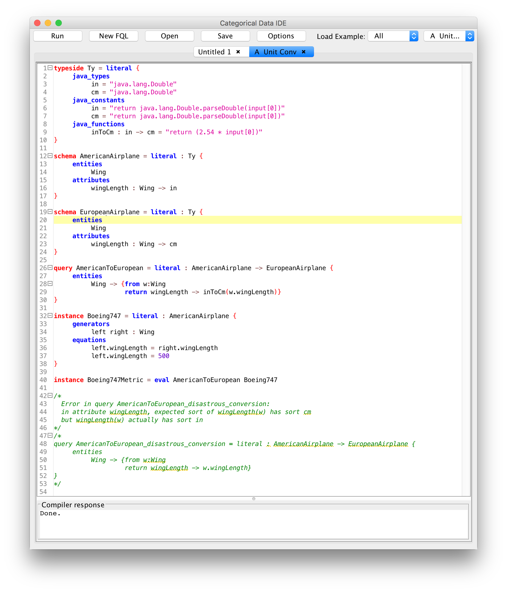

Categorical Databases
Home |
Download |
Getting Started |
Manual |
Wiki |
Papers |
Screen Shots |
Github |
Google Group |
Conexus |
Contact
High-assurance User-defined Functions
Many data integration tasks require user defined functions (UDFs): for example, to convert inches to centimeters. When UDFs are defined or used incorrectly, data can be silently corrupted. In CQL, user-defined functions are first-class schema elements, and CQL's automated theorem proving technology seamlessly provides high-assurance compile-time aid to schemas with user-defined functions.
This example (built in to the IDE with name Unit Conv) defines a source schema about American airplanes, which have wing spans in inches, and a target schema about European airplanes, which have wing spans in centimeters. The type side specifies how to convert inches to centimeters, and a query which does not convert inches to centimeters is rejected. Although this example uses a relatively simply type conversion, CQL supports user-defined types defined by arbitrary equations.
We start by defining a type side that contains two user defined types, inches and centimeters, as well as a conversion between them:
typeside Ty = literal {
java_types
in = "java.lang.Double"
cm = "java.lang.Double"
java_constants
in = "return java.lang.Double.parseDouble(input[0])"
cm = "return java.lang.Double.parseDouble(input[0])"
java_functions
inToCm : in -> cm = "return (2.54 * input[0])"
}
The source and target schemas contain wingspans in inches (for American planes) and centimeters (for European planes):
schema AmericanAirplane = literal : Ty {
entities
Wing
attributes
wingLength : Wing -> in
}
schema EuropeanAirplane = literal : Ty {
entities
Wing
attributes
wingLength : Wing -> cm
}
An American airplane instance is, for example:
instance Boeing747 = literal : AmericanAirplane {
generators
left right : Wing
equations
left.wingLength = right.wingLength
left.wingLength = 500
}

To convert an American airplane to a European airplane requires converting inches to centimeters:
query AmericanToEuropean = literal : AmericanAirplane -> EuropeanAirplane {
entities
Wing -> {from w:Wing
return wingLength -> inToCm(w.wingLength)}
}
instance Boeing747Metric = eval AmericanToEuropean Boeing747

A similar query that omits the unit conversion is rejected:
query AmericanToEuropean_disastrous_conversion = literal : AmericanAirplane -> EuropeanAirplane {
entities
Wing -> {from w:Wing
return wingLength -> w.wingLength}
}
Error in query AmericanToEuropean_disastrous_conversion:
in attribute wingLength, expected sort of wingLength(w) is cm
but wingLength(w) actually has sort in.
A screen shot of the entire development is shown below:
